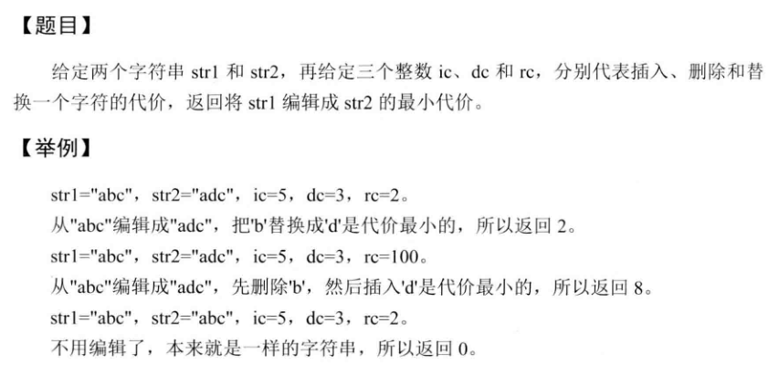

<!DOCTYPE html>
<html lang="zh">
<head><meta name="generator" content="Hexo 3.8.0">
    <meta charset="utf-8">
    
    <title>算法专题_二维数组 | FEI&#39;s Blog</title>
    
    
        <meta name="keywords" content="ACM">
    
    <meta name="viewport" content="width=device-width, initial-scale=1, maximum-scale=1">
    <meta name="description" content="主要是关于两个数组，两个字符串的相关问题。">
<meta name="keywords" content="ACM">
<meta property="og:type" content="article">
<meta property="og:title" content="算法专题_二维数组">
<meta property="og:url" content="http://ff120.github.io/hexoblog/2017/03/21/技术/数据结构和算法/算法专题_二维数组/index.html">
<meta property="og:site_name" content="FEI&#39;s Blog">
<meta property="og:description" content="主要是关于两个数组，两个字符串的相关问题。">
<meta property="og:locale" content="zh-Hans">
<meta property="og:image" content="http://ff120.github.io/hexoblog/2017/03/21/技术/数据结构和算法/算法专题_二维数组/2017-03-21_093231.png">
<meta property="og:image" content="http://ff120.github.io/hexoblog/2017/03/21/技术/数据结构和算法/算法专题_二维数组/2017-03-21_093641.png">
<meta property="og:image" content="http://ff120.github.io/hexoblog/2017/03/21/技术/数据结构和算法/算法专题_二维数组/2017-03-21_094030.png">
<meta property="og:image" content="http://ff120.github.io/hexoblog/2017/03/21/技术/数据结构和算法/算法专题_二维数组/2017-03-21_094649.png">
<meta property="og:image" content="http://ff120.github.io/hexoblog/2017/03/21/技术/数据结构和算法/算法专题_二维数组/2017-03-22_110804.png">
<meta property="og:updated_time" content="2019-03-28T00:54:56.388Z">
<meta name="twitter:card" content="summary">
<meta name="twitter:title" content="算法专题_二维数组">
<meta name="twitter:description" content="主要是关于两个数组，两个字符串的相关问题。">
<meta name="twitter:image" content="http://ff120.github.io/hexoblog/2017/03/21/技术/数据结构和算法/算法专题_二维数组/2017-03-21_093231.png">
    

    
        <link rel="alternate" href="/atom.xml" title="FEI&#39;s Blog" type="application/atom+xml">
    

    
        <link rel="icon" href="/hexoblog/favicon.ico">
    

    <link rel="stylesheet" href="/hexoblog/libs/font-awesome/css/font-awesome.min.css">
    <link rel="stylesheet" href="/hexoblog/libs/open-sans/styles.css">
    <link rel="stylesheet" href="/hexoblog/libs/source-code-pro/styles.css">

    <link rel="stylesheet" href="/hexoblog/css/style.css">
    <script src="/hexoblog/libs/jquery/2.1.3/jquery.min.js"></script>
    <script src="/hexoblog/libs/jquery/plugins/cookie/1.4.1/jquery.cookie.js"></script>
    
    
        <link rel="stylesheet" href="/hexoblog/libs/lightgallery/css/lightgallery.min.css">
    
    
        <link rel="stylesheet" href="/hexoblog/libs/justified-gallery/justifiedGallery.min.css">
    
    
    
    


    
        <script async src="//busuanzi.ibruce.info/busuanzi/2.3/busuanzi.pure.mini.js"></script>
    
</head>
</html>
<body>
    <div id="container">
        <header id="header">
    <div id="header-main" class="header-inner">
        <div class="outer">
            <a href="/hexoblog/" id="logo">
                <i class="logo"></i>
                <span class="site-title">FEI&#39;s Blog</span>
            </a>
            <nav id="main-nav">
                
                    <a class="main-nav-link" href="/hexoblog/">首页</a>
                
                    <a class="main-nav-link" href="/hexoblog/archives">归档</a>
                
                    <a class="main-nav-link" href="/hexoblog/categories">分类</a>
                
                    <a class="main-nav-link" href="/hexoblog/tags">标签</a>
                
                    <a class="main-nav-link" href="/hexoblog/about">关于</a>
                
            </nav>
            
            <div id="search-form-wrap">

    <form class="search-form">
        <input type="text" class="ins-search-input search-form-input" placeholder="Rechercher">
        <button type="submit" class="search-form-submit"></button>
    </form>
    <div class="ins-search">
    <div class="ins-search-mask"></div>
    <div class="ins-search-container">
        <div class="ins-input-wrapper">
            <input type="text" class="ins-search-input" placeholder="Type something...">
            <span class="ins-close ins-selectable"><i class="fa fa-times-circle"></i></span>
        </div>
        <div class="ins-section-wrapper">
            <div class="ins-section-container"></div>
        </div>
    </div>
</div>
<script>
(function (window) {
    var INSIGHT_CONFIG = {
        TRANSLATION: {
            POSTS: 'Articles',
            PAGES: 'Pages',
            CATEGORIES: 'Catégories',
            TAGS: 'Tags',
            UNTITLED: '(Untitled)',
        },
        ROOT_URL: '/hexoblog/',
        CONTENT_URL: '/hexoblog/content.json',
    };
    window.INSIGHT_CONFIG = INSIGHT_CONFIG;
})(window);
</script>
<script src="/hexoblog/js/insight.js"></script>

</div>
        </div>
    </div>
    <div id="main-nav-mobile" class="header-sub header-inner">
        <table class="menu outer">
            <tr>
                
                    <td><a class="main-nav-link" href="/hexoblog/">首页</a></td>
                
                    <td><a class="main-nav-link" href="/hexoblog/archives">归档</a></td>
                
                    <td><a class="main-nav-link" href="/hexoblog/categories">分类</a></td>
                
                    <td><a class="main-nav-link" href="/hexoblog/tags">标签</a></td>
                
                    <td><a class="main-nav-link" href="/hexoblog/about">关于</a></td>
                
                <td>
                    
    <div class="search-form">
        <input type="text" class="ins-search-input search-form-input" placeholder="Rechercher">
    </div>

                </td>
            </tr>
        </table>
    </div>
</header>

        <div class="outer">
            
            
                <aside id="sidebar">
   
        
    <div class="widget-wrap" id="categories">
        <h3 class="widget-title">
            <span>Catégories</span>
            &nbsp;
            <a id="allExpand" href="#">
                <i class="fa fa-angle-double-down fa-2x"></i>
            </a>
        </h3>
        
        
        
         <ul class="unstyled" id="tree"> 
                    <li class="directory">
                        <a href="#" data-role="directory">
                            <i class="fa fa-folder"></i>
                            &nbsp;
                            心理学
                        </a>
                         <ul class="unstyled" id="tree"> 
                    <li class="directory">
                        <a href="#" data-role="directory">
                            <i class="fa fa-folder"></i>
                            &nbsp;
                            记忆魔法
                        </a>
                         <ul class="unstyled" id="tree">  <li class="file"><a href="/hexoblog/2019/04/03/心理学/记忆魔法/代码记忆法/">代码记忆法</a></li>  </ul> 
                    </li> 
                     </ul> 
                    </li> 
                    
                    <li class="directory open">
                        <a href="#" data-role="directory">
                            <i class="fa fa-folder-open"></i>
                            &nbsp;
                            技术
                        </a>
                         <ul class="unstyled" id="tree"> 
                    <li class="directory">
                        <a href="#" data-role="directory">
                            <i class="fa fa-folder"></i>
                            &nbsp;
                            Web开发
                        </a>
                         <ul class="unstyled" id="tree">  <li class="file"><a href="/hexoblog/2016/06/11/技术/Web开发/后台开发_How-to-install-Laravel-framework/">How to install Laravel framework</a></li>  <li class="file"><a href="/hexoblog/2016/06/11/技术/Web开发/后台开发_laravel-4-note-01/">laravel 4 note 01</a></li>  <li class="file"><a href="/hexoblog/2016/06/11/技术/Web开发/后台开发_Make-phpStorm-friendly-to-laravel/">Make phpStorm friendly to laravel</a></li>  <li class="file"><a href="/hexoblog/2016/06/11/技术/Web开发/后台开发_sublime-Text-tricks/">sublime Text tricks</a></li>  <li class="file"><a href="/hexoblog/2016/06/11/技术/Web开发/后台开发_think-php-note-01/">think php note 01</a></li>  <li class="file"><a href="/hexoblog/2016/06/11/技术/Web开发/后台开发_think-php-note-02/">think php note 02</a></li>  <li class="file"><a href="/hexoblog/2016/06/11/技术/Web开发/后台开发_think-php-note-03/">think php note 03</a></li>  <li class="file"><a href="/hexoblog/2016/06/11/技术/Web开发/后台开发_PHP编译less文件-lessphp的使用/">PHP编译less文件-lessphp的使用</a></li>  <li class="file"><a href="/hexoblog/2016/06/11/技术/Web开发/后台开发_Lavarel-后台组件frozenode的使用/">Lavarel 后台组件frozenode的使用</a></li>  <li class="file"><a href="/hexoblog/2016/06/11/技术/Web开发/后台开发_Linux常用命令/">Linux常用命令</a></li>  <li class="file"><a href="/hexoblog/2016/06/11/技术/Web开发/后台开发_Linux主机之间同步文件/">Linux主机之间同步文件</a></li>  <li class="file"><a href="/hexoblog/2016/06/11/技术/Web开发/后台开发_PHP基本操作/">PHP基本操作</a></li>  <li class="file"><a href="/hexoblog/2016/06/11/技术/Web开发/后台开发_短信验证码的实现/">短信验证码的实现</a></li>  <li class="file"><a href="/hexoblog/2016/06/11/技术/Web开发/后台开发_配置Apache支持使用HTTPS/">配置Apache支持使用HTTPS</a></li>  <li class="file"><a href="/hexoblog/2016/06/11/技术/Web开发/测试_使用Selenium测试UI/">测试_使用Selenium测试UI</a></li>  <li class="file"><a href="/hexoblog/2016/06/11/技术/Web开发/后台开发_PhpStorm常用快捷键/">PhpStorm常用快捷键</a></li>  <li class="file"><a href="/hexoblog/2016/06/11/技术/Web开发/微信开发_微信发送消息PHP-SDK/">微信发送消息PHP SDK</a></li>  <li class="file"><a href="/hexoblog/2016/06/11/技术/Web开发/微信开发_获取地理位置/">微信获取地理位置 </a></li>  <li class="file"><a href="/hexoblog/2016/06/11/技术/Web开发/微信开发_发送模板消息的代码/">微信发送模板消息的代码</a></li>  <li class="file"><a href="/hexoblog/2016/06/11/技术/Web开发/测试_Selenium-定位元素的几种方式/">测试_Selenium定位元素的几种方式</a></li>  <li class="file"><a href="/hexoblog/2016/06/11/技术/Web开发/测试_Selenium-Action/">测试_Selenium Action</a></li>  <li class="file"><a href="/hexoblog/2016/06/11/技术/Web开发/测试_Apache-JMeter的使用/">测试_Apache JMeter的使用</a></li>  <li class="file"><a href="/hexoblog/2016/06/12/技术/Web开发/后台开发_Apache-配置虚拟主机/">Apache 配置虚拟主机</a></li>  <li class="file"><a href="/hexoblog/2016/06/23/技术/Web开发/后台开发_改进PHP的var-dump-方法使之适应显示从数据库中查出来的数据/">改进PHP的var_dump()方法使之适应显示从数据库中查出来的数据</a></li>  <li class="file"><a href="/hexoblog/2016/06/23/技术/Web开发/后台开发_PHP读写XLS/">PHP读写XLS</a></li>  <li class="file"><a href="/hexoblog/2016/06/30/技术/Web开发/前端_jQuery-EasyUI-学习笔记/">JQuery EasyUI 学习笔记</a></li>  <li class="file"><a href="/hexoblog/2016/06/30/技术/Web开发/前端_bootsharp学习笔记/">Bootsharp学习笔记</a></li>  </ul> 
                    </li> 
                    
                    <li class="directory">
                        <a href="#" data-role="directory">
                            <i class="fa fa-folder"></i>
                            &nbsp;
                            专业术语
                        </a>
                         <ul class="unstyled" id="tree">  <li class="file"><a href="/hexoblog/2017/07/24/技术/专业术语/术语/">英语</a></li>  </ul> 
                    </li> 
                    
                    <li class="directory">
                        <a href="#" data-role="directory">
                            <i class="fa fa-folder"></i>
                            &nbsp;
                            大数据
                        </a>
                         <ul class="unstyled" id="tree">  <li class="file"><a href="/hexoblog/2016/06/23/技术/大数据/大数据_Spark环境下的Kmeans-Python实现/">Spark环境下的Kmeans-Python实现</a></li>  <li class="file"><a href="/hexoblog/2017/10/06/技术/大数据/大数据基础框架/">大数据基础框架</a></li>  </ul> 
                    </li> 
                    
                    <li class="directory">
                        <a href="#" data-role="directory">
                            <i class="fa fa-folder"></i>
                            &nbsp;
                            工具
                        </a>
                         <ul class="unstyled" id="tree"> 
                    <li class="directory">
                        <a href="#" data-role="directory">
                            <i class="fa fa-folder"></i>
                            &nbsp;
                            AutoHotKey
                        </a>
                         <ul class="unstyled" id="tree">  <li class="file"><a href="/hexoblog/2018/12/02/技术/工具/AutoHotKey/AutoHotKey非常有用的脚本/">AutoHotKey非常有用的脚本</a></li>  </ul> 
                    </li> 
                    
                    <li class="directory">
                        <a href="#" data-role="directory">
                            <i class="fa fa-folder"></i>
                            &nbsp;
                            Git
                        </a>
                         <ul class="unstyled" id="tree">  <li class="file"><a href="/hexoblog/2017/05/04/技术/工具/Git/GIT的使用01-基本功能/">GIT的使用01-基本功能</a></li>  <li class="file"><a href="/hexoblog/2018/07/29/技术/工具/Git/Git查询手册/">Git 手册</a></li>  </ul> 
                    </li> 
                    
                    <li class="directory">
                        <a href="#" data-role="directory">
                            <i class="fa fa-folder"></i>
                            &nbsp;
                            Hexo
                        </a>
                         <ul class="unstyled" id="tree">  <li class="file"><a href="/hexoblog/2016/06/12/技术/工具/Hexo/Hexo的使用02-同步/">Hexo的使用02-同步</a></li>  <li class="file"><a href="/hexoblog/2016/06/13/技术/工具/Hexo/Hexo的使用01-搭建/">Hexo的使用01-搭建</a></li>  <li class="file"><a href="/hexoblog/2017/04/12/技术/工具/Hexo/Hexo的使用05-Atom编辑器/">Hexo的使用05-Atom编辑器</a></li>  <li class="file"><a href="/hexoblog/2017/04/12/技术/工具/Hexo/Hexo的使用04-数学公式/">Hexo的使用04-数学公式</a></li>  <li class="file"><a href="/hexoblog/2017/05/05/技术/工具/Hexo/Hexo的使用03-迁移/">Hexo的使用03-迁移</a></li>  <li class="file"><a href="/hexoblog/2017/07/17/技术/工具/Hexo/Hexo的使用06-使用gist存储代码片段/">Hexo中使用gist存储代码片段</a></li>  </ul> 
                    </li> 
                    
                    <li class="directory">
                        <a href="#" data-role="directory">
                            <i class="fa fa-folder"></i>
                            &nbsp;
                            Visio
                        </a>
                         <ul class="unstyled" id="tree">  <li class="file"><a href="/hexoblog/2017/05/05/技术/工具/Visio/VISIO的使用01-基础入门/">VISIO的使用01-基础入门</a></li>  </ul> 
                    </li> 
                    
                    <li class="directory">
                        <a href="#" data-role="directory">
                            <i class="fa fa-folder"></i>
                            &nbsp;
                            图片处理
                        </a>
                         <ul class="unstyled" id="tree">  <li class="file"><a href="/hexoblog/2017/05/05/技术/工具/图片处理/图片处理02-一寸照片/">图片处理02-一寸照片</a></li>  <li class="file"><a href="/hexoblog/2017/05/17/技术/工具/图片处理/图片处理01-合并多张图片/">图片处理01-合并多张图片</a></li>  </ul> 
                    </li> 
                    
                    <li class="directory">
                        <a href="#" data-role="directory">
                            <i class="fa fa-folder"></i>
                            &nbsp;
                            正则表达式
                        </a>
                         <ul class="unstyled" id="tree">  <li class="file"><a href="/hexoblog/2018/07/29/技术/工具/正则表达式/正则表达式/">正则表达式</a></li>  </ul> 
                    </li> 
                    
                    <li class="directory">
                        <a href="#" data-role="directory">
                            <i class="fa fa-folder"></i>
                            &nbsp;
                            编程IDE
                        </a>
                         <ul class="unstyled" id="tree"> 
                    <li class="directory">
                        <a href="#" data-role="directory">
                            <i class="fa fa-folder"></i>
                            &nbsp;
                            Anaconda
                        </a>
                         <ul class="unstyled" id="tree">  <li class="file"><a href="/hexoblog/2017/04/18/技术/工具/编程IDE/Anaconda/Anaconda的使用01-基础/">Anaconda的使用01-基础</a></li>  </ul> 
                    </li> 
                    
                    <li class="directory">
                        <a href="#" data-role="directory">
                            <i class="fa fa-folder"></i>
                            &nbsp;
                            JetBrainsCLion
                        </a>
                         <ul class="unstyled" id="tree">  <li class="file"><a href="/hexoblog/2017/05/04/技术/工具/编程IDE/JetBrainsCLion/JetBrainsCLion的使用01-入门/">JetBrainsCLion的使用01-入门</a></li>  </ul> 
                    </li> 
                    
                    <li class="directory">
                        <a href="#" data-role="directory">
                            <i class="fa fa-folder"></i>
                            &nbsp;
                            VSCode
                        </a>
                         <ul class="unstyled" id="tree">  <li class="file"><a href="/hexoblog/2017/07/24/技术/工具/编程IDE/VSCode/Visual-Studio-Code使用技巧/">Visual Studio Code使用技巧</a></li>  </ul> 
                    </li> 
                     </ul> 
                    </li> 
                    
                    <li class="directory">
                        <a href="#" data-role="directory">
                            <i class="fa fa-folder"></i>
                            &nbsp;
                            网络软件
                        </a>
                         <ul class="unstyled" id="tree">  <li class="file"><a href="/hexoblog/2016/06/12/技术/工具/网络软件/Windows全局代理软件Proxifier/">Windows全局代理软件Proxifier</a></li>  <li class="file"><a href="/hexoblog/2016/06/12/技术/工具/网络软件/Windows手工修改路由表/">Windows手工修改路由表</a></li>  </ul> 
                    </li> 
                     </ul> 
                    </li> 
                    
                    <li class="directory">
                        <a href="#" data-role="directory">
                            <i class="fa fa-folder"></i>
                            &nbsp;
                            数据库
                        </a>
                         <ul class="unstyled" id="tree">  <li class="file"><a href="/hexoblog/2016/06/11/技术/数据库/数据库_Redis入门/">Redis入门</a></li>  <li class="file"><a href="/hexoblog/2016/06/12/技术/数据库/数据库_使用Database-Configuration-Assist-工具创建oracle数据库/">使用Database Configuration Assist 工具创建oracle数据库</a></li>  <li class="file"><a href="/hexoblog/2017/11/02/技术/数据库/SQL/">SQL</a></li>  </ul> 
                    </li> 
                    
                    <li class="directory open">
                        <a href="#" data-role="directory">
                            <i class="fa fa-folder-open"></i>
                            &nbsp;
                            数据结构和算法
                        </a>
                         <ul class="unstyled" id="tree">  <li class="file active"><a href="/hexoblog/2017/03/21/技术/数据结构和算法/算法专题_二维数组/">算法专题_二维数组</a></li>  <li class="file"><a href="/hexoblog/2017/03/21/技术/数据结构和算法/算法专题_矩阵和图/">矩阵和用矩阵表示的图的相关问题</a></li>  <li class="file"><a href="/hexoblog/2017/03/21/技术/数据结构和算法/算法专题_位运算/">算法专题_位运算</a></li>  <li class="file"><a href="/hexoblog/2017/03/23/技术/数据结构和算法/算法专题_链表/">算法专题_链表</a></li>  <li class="file"><a href="/hexoblog/2017/04/05/技术/数据结构和算法/算法专题_动态规划/">算法专题_动态规划</a></li>  <li class="file"><a href="/hexoblog/2017/04/06/技术/数据结构和算法/算法专题_图/">算法专题_图问题</a></li>  <li class="file"><a href="/hexoblog/2017/04/08/技术/数据结构和算法/做过的算法题汇总表/">做过的算法题汇总表</a></li>  <li class="file"><a href="/hexoblog/2017/04/09/技术/数据结构和算法/算法专题_二叉树/">算法专题_二叉树</a></li>  <li class="file"><a href="/hexoblog/2017/04/09/技术/数据结构和算法/算法专题_通用树结构/">算法专题_通用树结构</a></li>  <li class="file"><a href="/hexoblog/2017/04/10/技术/数据结构和算法/算法专题_大数据和空间限制/">算法专题_大数据和空间限制</a></li>  <li class="file"><a href="/hexoblog/2017/04/10/技术/数据结构和算法/算法专题_排列组合/">算法专题_排列组合</a></li>  <li class="file"><a href="/hexoblog/2017/04/11/技术/数据结构和算法/本地代码集锦/">本地代码集锦</a></li>  <li class="file"><a href="/hexoblog/2017/04/12/技术/数据结构和算法/算法专题_栈和队列/">算法专题_栈和队列</a></li>  <li class="file"><a href="/hexoblog/2017/04/16/技术/数据结构和算法/算法专题_排序算法/">算法专题_排序算法</a></li>  <li class="file"><a href="/hexoblog/2017/04/17/技术/数据结构和算法/算法专题_算法总结/">算法专题_算法总结</a></li>  <li class="file"><a href="/hexoblog/2017/05/02/技术/数据结构和算法/算法专题_一维数组/">算法专题_一维数组</a></li>  <li class="file"><a href="/hexoblog/2017/05/05/技术/数据结构和算法/算法专题_图之网络流/">算法专题_图之网络流</a></li>  <li class="file"><a href="/hexoblog/2017/05/06/技术/数据结构和算法/算法专题_图之最短路径/">算法专题_图之最短路径</a></li>  <li class="file"><a href="/hexoblog/2017/05/06/技术/数据结构和算法/算法专题_最小生成树/">算法专题_最小生成树</a></li>  <li class="file"><a href="/hexoblog/2017/05/06/技术/数据结构和算法/算法专题_霍夫曼编码/">算法专题_霍夫曼编码(哈夫曼编码)</a></li>  <li class="file"><a href="/hexoblog/2017/05/07/技术/数据结构和算法/Kickstart-Round-B-2017/">Kickstart Round B 2017</a></li>  <li class="file"><a href="/hexoblog/2017/05/08/技术/数据结构和算法/算法专题_模运算/">算法专题_模运算</a></li>  <li class="file"><a href="/hexoblog/2017/05/09/技术/数据结构和算法/算法专题_素数问题/">算法专题_素数问题</a></li>  <li class="file"><a href="/hexoblog/2017/05/11/技术/数据结构和算法/算法专题_计算几何/">算法专题_计算几何</a></li>  <li class="file"><a href="/hexoblog/2017/05/27/技术/数据结构和算法/计蒜之道2017程序设计大赛/">计蒜之道2017程序设计大赛</a></li>  <li class="file"><a href="/hexoblog/2017/05/28/技术/数据结构和算法/算法专题_字符串匹配/">算法专题_字符串匹配</a></li>  <li class="file"><a href="/hexoblog/2017/07/12/技术/数据结构和算法/四等分数组/">四等分数组</a></li>  <li class="file"><a href="/hexoblog/2017/07/12/技术/数据结构和算法/矩阵的遍历/">矩阵的遍历</a></li>  <li class="file"><a href="/hexoblog/2017/07/20/技术/数据结构和算法/N皇后问题/">N皇后问题</a></li>  <li class="file"><a href="/hexoblog/2017/07/23/技术/数据结构和算法/算法专题_线段树/">算法专题_线段树</a></li>  <li class="file"><a href="/hexoblog/2017/07/23/技术/数据结构和算法/算法专题_树状数组/">算法专题_树状数组</a></li>  <li class="file"><a href="/hexoblog/2017/07/23/技术/数据结构和算法/算法专题_并查集/">算法专题_并查集</a></li>  <li class="file"><a href="/hexoblog/2017/07/26/技术/数据结构和算法/算法专题_链表2/">算法专题_链表2</a></li>  <li class="file"><a href="/hexoblog/2017/08/06/技术/数据结构和算法/算法专题_二叉堆/">算法专题_二叉堆</a></li>  <li class="file"><a href="/hexoblog/2017/08/07/技术/数据结构和算法/算法专题_快速排序/">算法专题_快速排序</a></li>  <li class="file"><a href="/hexoblog/2017/08/07/技术/数据结构和算法/算法专题_归并排序/">算法专题_归并排序</a></li>  <li class="file"><a href="/hexoblog/2017/08/13/技术/数据结构和算法/算法专题-hihocoder/">算法专题_hihocoder</a></li>  <li class="file"><a href="/hexoblog/2017/08/17/技术/数据结构和算法/算法专题-贪心法/">算法专题_贪心法</a></li>  <li class="file"><a href="/hexoblog/2017/08/18/技术/数据结构和算法/阿里在线测评-兔子繁殖问题/">阿里笔试</a></li>  <li class="file"><a href="/hexoblog/2017/08/22/技术/数据结构和算法/今日头条-在线编程题/">今日头条_在线编程题</a></li>  <li class="file"><a href="/hexoblog/2017/08/23/技术/数据结构和算法/算法专题-字典树-Trie树/">算法专题_字典树(Trie树)</a></li>  <li class="file"><a href="/hexoblog/2017/09/23/技术/数据结构和算法/算法专题_二叉树2/">算法专题_二叉树2</a></li>  <li class="file"><a href="/hexoblog/2017/09/27/技术/数据结构和算法/手写代码-其他/">手写代码-其他</a></li>  <li class="file"><a href="/hexoblog/2017/10/03/技术/数据结构和算法/算法专题-常见题目/">算法专题_常见题目</a></li>  </ul> 
                    </li> 
                    
                    <li class="directory">
                        <a href="#" data-role="directory">
                            <i class="fa fa-folder"></i>
                            &nbsp;
                            机器学习
                        </a>
                         <ul class="unstyled" id="tree"> 
                    <li class="directory">
                        <a href="#" data-role="directory">
                            <i class="fa fa-folder"></i>
                            &nbsp;
                            深度学习
                        </a>
                         <ul class="unstyled" id="tree">  <li class="file"><a href="/hexoblog/2017/03/22/技术/机器学习/深度学习/深度学习_Theano使用技巧/">深度学习_Theano使用技巧</a></li>  <li class="file"><a href="/hexoblog/2017/04/18/技术/机器学习/深度学习/深度学习_基本概念/">深度学习_基本概念</a></li>  <li class="file"><a href="/hexoblog/2017/04/18/技术/机器学习/深度学习/深度学习_利用神经网络识别手写数字/">深度学习__利用神经网络识别手写数字</a></li>  <li class="file"><a href="/hexoblog/2017/04/19/技术/机器学习/深度学习/深度学习_反向传播算法及简单实例/">深度学习_反向传播算法及简单实例</a></li>  <li class="file"><a href="/hexoblog/2017/04/19/技术/机器学习/深度学习/深度学习_Keras使用技巧/">深度学习_Keras使用技巧</a></li>  <li class="file"><a href="/hexoblog/2017/04/20/技术/机器学习/深度学习/深度学习_使用keras实现autoencoder/">深度学习_使用keras实现autoencoder</a></li>  <li class="file"><a href="/hexoblog/2017/04/20/技术/机器学习/深度学习/深度学习_卷积神经网络/">深度学习_卷积神经网络</a></li>  <li class="file"><a href="/hexoblog/2017/04/27/技术/机器学习/深度学习/深度学习_使用autoencoder自动提取特征/">深度学习_使用autoencoder自动提取特征</a></li>  <li class="file"><a href="/hexoblog/2017/05/10/技术/机器学习/深度学习/深度学习_递归神经网络(RNN)/">深度学习_递归神经网络(RNN)</a></li>  <li class="file"><a href="/hexoblog/2017/05/10/技术/机器学习/深度学习/深度学习_限制波尔茨曼向量机(RBM)/">深度学习_限制波尔茨曼向量机(RBM)</a></li>  <li class="file"><a href="/hexoblog/2017/05/12/技术/机器学习/深度学习/深度学习_TensorFlow使用技巧/">深度学习_TensorFlow使用技巧</a></li>  </ul> 
                    </li> 
                     <li class="file"><a href="/hexoblog/2016/06/16/技术/机器学习/机器学习_Scikit-Learn-ManyClassifier/">同时使用多个分类器(Scikit-Learn)</a></li>  <li class="file"><a href="/hexoblog/2016/06/16/技术/机器学习/机器学习_范数/">机器学习_范数</a></li>  <li class="file"><a href="/hexoblog/2016/06/20/技术/机器学习/机器学习_学习路线/">机器学习_学习路线</a></li>  <li class="file"><a href="/hexoblog/2016/06/20/技术/机器学习/机器学习_手写数字识别/">机器学习_手写数字识别</a></li>  <li class="file"><a href="/hexoblog/2016/07/11/技术/机器学习/机器学习_Matplolib使用技巧/">机器学习_Matplolib使用技巧</a></li>  <li class="file"><a href="/hexoblog/2017/03/22/技术/机器学习/机器学习_人脸识别/">机器学习_人脸识别</a></li>  <li class="file"><a href="/hexoblog/2017/05/04/技术/机器学习/机器学习_Matlab使用技巧/">机器学习_Matlab使用技巧</a></li>  <li class="file"><a href="/hexoblog/2017/05/11/技术/机器学习/机器学习_时间序列预测分析算法/">机器学习_时间序列预测分析算法</a></li>  <li class="file"><a href="/hexoblog/2017/05/14/技术/机器学习/机器学习_Scikit-Learn使用技巧/">深度学习_Scikit-Learn机器学习算法的使用</a></li>  <li class="file"><a href="/hexoblog/2017/05/15/技术/机器学习/机器学习_时间序列预测の广告效果预测/">机器学习_时间序列预测の广告效果预测</a></li>  <li class="file"><a href="/hexoblog/2017/05/15/技术/机器学习/机器学习_算法汇总/">机器学习_算法汇总</a></li>  <li class="file"><a href="/hexoblog/2017/05/17/技术/机器学习/机器学习_Pandas使用技巧/">深度学习_Pandas使用技巧</a></li>  <li class="file"><a href="/hexoblog/2017/05/19/技术/机器学习/机器学习_感知机/">机器学习_感知机</a></li>  <li class="file"><a href="/hexoblog/2017/05/19/技术/机器学习/机器学习_逻辑回归/">机器学习_逻辑回归</a></li>  <li class="file"><a href="/hexoblog/2017/05/22/技术/机器学习/机器学习_损失函数/">机器学习_损失函数</a></li>  <li class="file"><a href="/hexoblog/2017/06/03/技术/机器学习/机器学习_分类器性能的度量/">机器学习_分类器性能的度量</a></li>  <li class="file"><a href="/hexoblog/2017/06/15/技术/机器学习/机器学习_Scipy使用技巧/">机器学习_Scipy使用技巧</a></li>  <li class="file"><a href="/hexoblog/2017/06/15/技术/机器学习/机器学习_Python使用技巧/">深度学习_Python使用技巧</a></li>  <li class="file"><a href="/hexoblog/2017/07/23/技术/机器学习/机器学习-Numpy使用技巧/">机器学习_Numpy使用技巧</a></li>  <li class="file"><a href="/hexoblog/2017/10/15/技术/机器学习/KNN-with-C/">KNN with C++</a></li>  <li class="file"><a href="/hexoblog/2017/11/04/技术/机器学习/机器学习-绪论-基本概念/">机器学习-绪论-基本概念</a></li>  <li class="file"><a href="/hexoblog/2017/11/04/技术/机器学习/机器学习-第一章-逻辑回归/">机器学习-第一章-逻辑回归</a></li>  <li class="file"><a href="/hexoblog/2017/11/04/技术/机器学习/机器学习-第二章-决策树/">机器学习-第二章-决策树</a></li>  <li class="file"><a href="/hexoblog/2017/11/04/技术/机器学习/机器学习-第三章-朴素贝叶斯/">机器学习-第三章-朴素贝叶斯</a></li>  <li class="file"><a href="/hexoblog/2017/11/04/技术/机器学习/机器学习-第四章-支持向量机/">机器学习-第四章-支持向量机</a></li>  <li class="file"><a href="/hexoblog/2017/11/04/技术/机器学习/机器学习-第五章-最近邻/">机器学习-第五章-最近邻</a></li>  <li class="file"><a href="/hexoblog/2017/11/04/技术/机器学习/机器学习-第六章-kmeans/">机器学习-第六章-kmeans</a></li>  <li class="file"><a href="/hexoblog/2017/11/04/技术/机器学习/机器学习-第七章-感知机/">机器学习-第七章-感知机</a></li>  </ul> 
                    </li> 
                    
                    <li class="directory">
                        <a href="#" data-role="directory">
                            <i class="fa fa-folder"></i>
                            &nbsp;
                            编程语言
                        </a>
                         <ul class="unstyled" id="tree"> 
                    <li class="directory">
                        <a href="#" data-role="directory">
                            <i class="fa fa-folder"></i>
                            &nbsp;
                            C++
                        </a>
                         <ul class="unstyled" id="tree">  <li class="file"><a href="/hexoblog/2017/04/07/技术/编程语言/C++/C++语言技巧/">C++语言技巧</a></li>  </ul> 
                    </li> 
                     </ul> 
                    </li> 
                    
                    <li class="directory">
                        <a href="#" data-role="directory">
                            <i class="fa fa-folder"></i>
                            &nbsp;
                            计算机基础
                        </a>
                         <ul class="unstyled" id="tree"> 
                    <li class="directory">
                        <a href="#" data-role="directory">
                            <i class="fa fa-folder"></i>
                            &nbsp;
                            计算机网络
                        </a>
                         <ul class="unstyled" id="tree">  <li class="file"><a href="/hexoblog/2016/06/12/技术/计算机基础/计算机网络/网络_校园网多终端上网方案/">校园网多终端上网方案</a></li>  <li class="file"><a href="/hexoblog/2017/07/12/技术/计算机基础/计算机网络/计算机网络/">计算机网络</a></li>  </ul> 
                    </li> 
                     </ul> 
                    </li> 
                    
                    <li class="directory">
                        <a href="#" data-role="directory">
                            <i class="fa fa-folder"></i>
                            &nbsp;
                            认知神经科学
                        </a>
                         <ul class="unstyled" id="tree">  <li class="file"><a href="/hexoblog/2016/06/12/技术/认知神经科学/文献检索方法/">文献检索方法</a></li>  <li class="file"><a href="/hexoblog/2016/06/12/技术/认知神经科学/参考文献书写格式/">参考文献书写格式</a></li>  <li class="file"><a href="/hexoblog/2016/06/12/技术/认知神经科学/使用Python处理fMRI数据/">使用Python处理fMRI数据</a></li>  <li class="file"><a href="/hexoblog/2016/06/22/技术/认知神经科学/中英文对照/">中英文对照</a></li>  <li class="file"><a href="/hexoblog/2017/01/03/技术/认知神经科学/circos入门教程/">circos入门教程</a></li>  <li class="file"><a href="/hexoblog/2017/03/08/技术/认知神经科学/基于视频的车牌识别和流量统计/">基于视频的车牌识别和流量统计</a></li>  <li class="file"><a href="/hexoblog/2017/03/08/技术/认知神经科学/基于贝叶斯网络和隐性知识的AU识别研究/">基于贝叶斯网络和隐性知识的AU识别研究</a></li>  <li class="file"><a href="/hexoblog/2017/03/09/技术/认知神经科学/基于连接的脑信息解码研究/">基于连接信息的脑信息解码研究</a></li>  <li class="file"><a href="/hexoblog/2017/03/09/技术/认知神经科学/认知神经科学系列目录/">认知神经科学系列目录</a></li>  <li class="file"><a href="/hexoblog/2017/03/20/技术/认知神经科学/多被试多RUN批量预处理(SPM)/">多被试多RUN批量预处理(SPM)</a></li>  <li class="file"><a href="/hexoblog/2017/03/20/技术/认知神经科学/SPM预处理中的常用操作/">SPM预处理中的常用操作</a></li>  <li class="file"><a href="/hexoblog/2017/03/20/技术/认知神经科学/动态因果模型(DCM)的批量定义和估计/">动态因果模型(DCM)的批量定义和估计</a></li>  <li class="file"><a href="/hexoblog/2017/04/13/技术/认知神经科学/使用SPM做Second-Level分析/">使用SPM做Second_Level分析</a></li>  <li class="file"><a href="/hexoblog/2017/04/13/技术/认知神经科学/DCM模型的定义和估计/">DCM模型的定义和估计</a></li>  <li class="file"><a href="/hexoblog/2017/04/14/技术/认知神经科学/XJVIEW的使用技巧/">XJVIEW的使用技巧</a></li>  <li class="file"><a href="/hexoblog/2017/04/14/技术/认知神经科学/SPM中函数的修改和使用/">SPM中函数的修改和使用</a></li>  <li class="file"><a href="/hexoblog/2017/05/02/技术/认知神经科学/fMRI中常用的工具包/">fMRI中常用的工具包</a></li>  <li class="file"><a href="/hexoblog/2017/05/11/技术/认知神经科学/使用3D卷积神经神经网络提取脑成像数据的特征/">使用3D卷积神经神经网络提取脑成像数据的特征</a></li>  <li class="file"><a href="/hexoblog/2017/05/14/技术/认知神经科学/fMRI相关的资源汇总/">fMRI相关的资源汇总</a></li>  <li class="file"><a href="/hexoblog/2017/05/30/技术/认知神经科学/fMRI相关问题汇总/">fMRI相关问题汇总</a></li>  </ul> 
                    </li> 
                     </ul> 
                    </li> 
                    
                    <li class="directory">
                        <a href="#" data-role="directory">
                            <i class="fa fa-folder"></i>
                            &nbsp;
                            收藏夹
                        </a>
                         <ul class="unstyled" id="tree">  <li class="file"><a href="/hexoblog/2017/03/22/收藏夹/博客集锦/">博客收藏</a></li>  </ul> 
                    </li> 
                     </ul> 
    </div>
    <script>
        $(document).ready(function() {
            var iconFolderOpenClass  = 'fa-folder-open';
            var iconFolderCloseClass = 'fa-folder';
            var iconAllExpandClass = 'fa-angle-double-down';
            var iconAllPackClass = 'fa-angle-double-up';
            // Handle directory-tree expansion:
            // 左键单独展开目录
            $(document).on('click', '#categories a[data-role="directory"]', function (event) {
                event.preventDefault();

                var icon = $(this).children('.fa');
                var expanded = icon.hasClass(iconFolderOpenClass);
                var subtree = $(this).siblings('ul');
                icon.removeClass(iconFolderOpenClass).removeClass(iconFolderCloseClass);
                if (expanded) {
                    if (typeof subtree != 'undefined') {
                        subtree.slideUp({ duration: 100 });
                    }
                    icon.addClass(iconFolderCloseClass);
                } else {
                    if (typeof subtree != 'undefined') {
                        subtree.slideDown({ duration: 100 });
                    }
                    icon.addClass(iconFolderOpenClass);
                }
            });
            // 右键展开下属所有目录
            $('#categories a[data-role="directory"]').bind("contextmenu", function(event){
                event.preventDefault();
                
                var icon = $(this).children('.fa');
                var expanded = icon.hasClass(iconFolderOpenClass);
                var listNode = $(this).siblings('ul');
                var subtrees = $.merge(listNode.find('li ul'), listNode);
                var icons = $.merge(listNode.find('.fa'), icon);
                icons.removeClass(iconFolderOpenClass).removeClass(iconFolderCloseClass);
                if(expanded) {
                    subtrees.slideUp({ duration: 100 });
                    icons.addClass(iconFolderCloseClass);
                } else {
                    subtrees.slideDown({ duration: 100 });
                    icons.addClass(iconFolderOpenClass);
                }
            })
            // 展开关闭所有目录按钮
            $(document).on('click', '#allExpand', function (event) {
                event.preventDefault();
                
                var icon = $(this).children('.fa');
                var expanded = icon.hasClass(iconAllExpandClass);
                icon.removeClass(iconAllExpandClass).removeClass(iconAllPackClass);
                if(expanded) {
                    $('#sidebar .fa.fa-folder').removeClass('fa-folder').addClass('fa-folder-open')
                    $('#categories li ul').slideDown({ duration: 100 });
                    icon.addClass(iconAllPackClass);
                } else {
                    $('#sidebar .fa.fa-folder-open').removeClass('fa-folder-open').addClass('fa-folder')
                    $('#categories li ul').slideUp({ duration: 100 });
                    icon.addClass(iconAllExpandClass);
                }
            });  
        });
    </script>

    
    <div id="toTop" class="fa fa-angle-up"></div>
</aside>
            
            <section id="main"><article id="post-技术/数据结构和算法/算法专题_二维数组" class="article article-type-post" itemscope="" itemprop="blogPost">
    <div class="article-inner">
        
        
            <header class="article-header">
                
                    <div class="article-meta">
                        
    <div class="article-category">
    	<i class="fa fa-folder"></i>
        <a class="article-category-link" href="/hexoblog/categories/技术/">技术</a><i class="fa fa-angle-right"></i><a class="article-category-link" href="/hexoblog/categories/技术/数据结构和算法/">数据结构和算法</a>
    </div>

                        
    <div class="article-tag">
        <i class="fa fa-tag"></i>
        <a class="tag-link" href="/hexoblog/tags/ACM/">ACM</a>
    </div>

                        
    <div class="article-date">
        <i class="fa fa-calendar"></i>
        <a href="/hexoblog/2017/03/21/技术/数据结构和算法/算法专题_二维数组/">
            <time datetime="2017-03-21T01:31:12.000Z" itemprop="datePublished">2017-03-21</time>
        </a>
    </div>


                        
                            <i class="fa fa-bar-chart"></i>
                            <span id="busuanzi_container_site_pv"><span id="busuanzi_value_page_pv"></span></span>    
                        
                        
                            <div class="article-meta-button">
                                <a href="https://github.com/FF120/hexoblog/raw/master/source/_posts/技术/数据结构和算法/算法专题_二维数组.md"> Source </a>
                            </div>
                            <div class="article-meta-button">
                                <a href="https://github.com/FF120/hexoblog/edit/master/source/_posts/技术/数据结构和算法/算法专题_二维数组.md"> Edit </a>
                            </div>
                            <div class="article-meta-button">
                                <a href="https://github.com/FF120/hexoblog/commits/master/source/_posts/技术/数据结构和算法/算法专题_二维数组.md"> History </a>
                            </div>
                        
                    </div>
                
                
    
        <h1 class="article-title" itemprop="name">
            算法专题_二维数组
        </h1>
    

            </header>
        
        
        <div class="article-entry" itemprop="articleBody">
        
        
            
                <div id="toc" class="toc-article">
                <strong class="toc-title">Catalogue</strong>
                    <ol class="toc"><li class="toc-item toc-level-2"><a class="toc-link" href="#最长公共子序列"><span class="toc-number">1.</span> <span class="toc-text">最长公共子序列</span></a></li><li class="toc-item toc-level-2"><a class="toc-link" href="#最长公共子串问题"><span class="toc-number">2.</span> <span class="toc-text">最长公共子串问题</span></a></li><li class="toc-item toc-level-2"><a class="toc-link" href="#最小的编辑代价"><span class="toc-number">3.</span> <span class="toc-text">最小的编辑代价</span></a></li><li class="toc-item toc-level-2"><a class="toc-link" href="#字符串的交错组成"><span class="toc-number">4.</span> <span class="toc-text">字符串的交错组成</span></a></li><li class="toc-item toc-level-2"><a class="toc-link" href="#判断两个字符串是否互为旋转词"><span class="toc-number">5.</span> <span class="toc-text">判断两个字符串是否互为旋转词</span></a></li><li class="toc-item toc-level-2"><a class="toc-link" href="#section"><span class="toc-number">6.</span> <span class="toc-text"></span></a></li></ol>
                </div>
            
        
        
            <p>主要是关于两个数组，两个字符串的相关问题。 <a id="more"></a></p>
<h2 id="最长公共子序列"><a href="http://lintcode.com/zh-cn/problem/longest-common-subsequence/#" target="_blank" rel="noopener">最长公共子序列</a></h2>
<div class="figure">


</div>
<p>解法: 动态规划。设<code>str1</code>长度是<code>m</code>, <code>str2</code>长度是<code>n</code>, 开一个大小是<code>dp[m+1][n+1]</code>的二维数组，<code>dp[0][j]</code>和<code>dp[i][0]</code>分别表示第一行和第一列，全部初始化为0. <code>dp[i][j]</code>表示<code>str1</code>前<code>i</code>个字符和<code>str2</code>前<code>j</code>个字符组成的最长公共子序列的长度。<code>dp[0][0]</code>表示两个字符串都是空串的情况下最长公共子序列的长度为0.</p>
<p>递推公式： <code>dp[i][j] = max(dp[i-1][j],dp[i][j-1])</code>, <code>dp[i][j] = max(dp[i][j],dp[i-1][j-1]+1) if(str1[i] == str2[j])</code></p>
<p>含义是： <code>str1[i]</code>和 <code>str2[j]</code> 的最长公共子序列 首先应该是 <code>str1[i-1]</code>与<code>str2[j]</code> <code>str[i</code>]与<code>str2[j-1]</code> 中较长的那个， 然后比较 <code>str1[i]</code>与<code>str2[j]</code>是否相等，如果相等，还可能是<code>str1[i-1]str2[j-1]</code>的长度 + 1 与当前的<code>dp[i][j]</code>中较大的那个。</p>
<p>输出找到的最长公共子序列的方法：</p>
<ol style="list-style-type: decimal">
<li><p>如果格子<code>dp[i][j]</code>对应的<code>str1[i-1] == str2[j-1]</code>，则把这个字符放入 LCS 中，并跳入<code>dp[i-1][j-1]</code>中继续进行判断；</p></li>
<li><p>如果格子<code>dp[i][j]</code>对应的 <code>str1[i-1] ≠str2[j-1]</code>，则比较<code>dp[i-1][j]</code>和<code>dp[i][j-1]</code>的值，跳入值较大的格子继续进行判断；(如果相等，说明存在多个最长的子序列)</p></li>
<li><p>直到<code>i</code>或<code>j</code> 小于等于零为止，倒序输出 LCS 。</p></li>
</ol>
<figure class="highlight c"><table><tr><td class="gutter"><pre><span class="line">1</span><br><span class="line">2</span><br><span class="line">3</span><br><span class="line">4</span><br><span class="line">5</span><br><span class="line">6</span><br><span class="line">7</span><br><span class="line">8</span><br><span class="line">9</span><br><span class="line">10</span><br><span class="line">11</span><br><span class="line">12</span><br><span class="line">13</span><br><span class="line">14</span><br><span class="line">15</span><br><span class="line">16</span><br><span class="line">17</span><br><span class="line">18</span><br><span class="line">19</span><br><span class="line">20</span><br><span class="line">21</span><br><span class="line">22</span><br><span class="line">23</span><br><span class="line">24</span><br><span class="line">25</span><br><span class="line">26</span><br><span class="line">27</span><br><span class="line">28</span><br><span class="line">29</span><br><span class="line">30</span><br><span class="line">31</span><br><span class="line">32</span><br><span class="line">33</span><br><span class="line">34</span><br><span class="line">35</span><br><span class="line">36</span><br><span class="line">37</span><br><span class="line">38</span><br><span class="line">39</span><br><span class="line">40</span><br><span class="line">41</span><br><span class="line">42</span><br><span class="line">43</span><br><span class="line">44</span><br><span class="line">45</span><br><span class="line">46</span><br></pre></td><td class="code"><pre><span class="line"><span class="meta">#<span class="meta-keyword">include</span> <span class="meta-string">&lt;iostream&gt;</span></span></span><br><span class="line"><span class="meta">#<span class="meta-keyword">include</span> <span class="meta-string">&lt;vector&gt;</span></span></span><br><span class="line"><span class="meta">#<span class="meta-keyword">include</span> <span class="meta-string">&lt;string&gt;</span></span></span><br><span class="line"></span><br><span class="line"><span class="keyword">using</span> <span class="keyword">namespace</span> <span class="built_in">std</span>;</span><br><span class="line"></span><br><span class="line"><span class="function"><span class="keyword">int</span> <span class="title">getMaxlength</span><span class="params">(<span class="keyword">const</span> <span class="built_in">string</span> &amp;s1,<span class="keyword">const</span> <span class="built_in">string</span> &amp;s2)</span></span>&#123;</span><br><span class="line">    <span class="keyword">int</span> ans;</span><br><span class="line">    <span class="keyword">size_t</span> m = s1.size();</span><br><span class="line">    <span class="keyword">size_t</span> n = s2.size();</span><br><span class="line">    <span class="built_in">vector</span>&lt;<span class="built_in">vector</span>&lt;<span class="keyword">int</span>&gt; &gt; dp(m+<span class="number">1</span>,<span class="built_in">vector</span>&lt;<span class="keyword">int</span>&gt;(n+<span class="number">1</span>,<span class="number">0</span>)); <span class="comment">// 第一行，第一列初始化为0</span></span><br><span class="line">    <span class="comment">//动态规划的递推公式</span></span><br><span class="line">    <span class="keyword">for</span>(<span class="keyword">int</span> i=<span class="number">1</span>;i&lt;=m;++i)&#123;</span><br><span class="line">        <span class="keyword">for</span>(<span class="keyword">int</span> j=<span class="number">1</span>;j&lt;=n;++j)&#123;</span><br><span class="line">            dp[i][j] = max(dp[i<span class="number">-1</span>][j],dp[i][j<span class="number">-1</span>]);</span><br><span class="line">            <span class="keyword">if</span>(s1[i<span class="number">-1</span>] == s2[j<span class="number">-1</span>])&#123;</span><br><span class="line">                dp[i][j] = max(dp[i][j],dp[i<span class="number">-1</span>][j<span class="number">-1</span>]+<span class="number">1</span>);</span><br><span class="line">            &#125;</span><br><span class="line">        &#125;</span><br><span class="line">    &#125;</span><br><span class="line"></span><br><span class="line">    <span class="comment">// 输出最长的子序列</span></span><br><span class="line">    <span class="keyword">int</span> i = m;</span><br><span class="line">    <span class="keyword">int</span> j = n;</span><br><span class="line">    <span class="built_in">string</span> cstr ;</span><br><span class="line">    <span class="keyword">while</span>(i &gt; <span class="number">0</span> &amp;&amp; j &gt; <span class="number">0</span>)&#123;</span><br><span class="line">        <span class="keyword">if</span>(s1[i<span class="number">-1</span>] == s2[j<span class="number">-1</span>])&#123;</span><br><span class="line">            cstr.insert(cstr.begin(),s1[i<span class="number">-1</span>]);</span><br><span class="line">            i--; j--;</span><br><span class="line">        &#125;<span class="keyword">else</span> <span class="keyword">if</span>(dp[i<span class="number">-1</span>][j] &gt;= dp[i][j<span class="number">-1</span>])&#123;</span><br><span class="line">            i--;</span><br><span class="line">        &#125;<span class="keyword">else</span> <span class="keyword">if</span>(dp[i<span class="number">-1</span>][j] &lt; dp[i][j<span class="number">-1</span>])&#123;</span><br><span class="line">            j--;</span><br><span class="line">        &#125;</span><br><span class="line">    &#125;</span><br><span class="line">    <span class="built_in">cout</span> &lt;&lt; cstr &lt;&lt; <span class="built_in">endl</span>;</span><br><span class="line"></span><br><span class="line">    <span class="keyword">return</span> dp[m][n];</span><br><span class="line">&#125;</span><br><span class="line"></span><br><span class="line"><span class="function"><span class="keyword">int</span> <span class="title">main</span><span class="params">()</span> </span>&#123;</span><br><span class="line">    <span class="built_in">string</span> s1 = <span class="string">"2bcd"</span>;</span><br><span class="line">    <span class="built_in">string</span> s2 = <span class="string">"a2ed"</span>;</span><br><span class="line">    <span class="built_in">std</span>::<span class="built_in">cout</span> &lt;&lt;getMaxlength(s1,s2) &lt;&lt; <span class="built_in">std</span>::<span class="built_in">endl</span>;</span><br><span class="line">    <span class="keyword">return</span> <span class="number">0</span>;</span><br><span class="line">&#125;</span><br></pre></td></tr></table></figure>
<h2 id="最长公共子串问题"><a href="http://lintcode.com/zh-cn/problem/longest-common-substring/#" target="_blank" rel="noopener">最长公共子串问题</a></h2>
<div class="figure">

<p class="caption">2017-03-21_093641.png</p>
</div>
<p>解法：动态规划。 <code>dp[i][j]</code>表示以<code>i,j</code>结尾的<code>str1,str2</code>的最长子串是多少； 如果<code>str1[i]!=str2[j]</code>,则为<code>0</code>，否则，<code>str1[i] == str[2][j]</code>,<code>dp[i][j] = dp[i-1][j-1]+1</code>; 找到dp表中最大的值输出。</p>
<figure class="highlight c"><table><tr><td class="gutter"><pre><span class="line">1</span><br><span class="line">2</span><br><span class="line">3</span><br><span class="line">4</span><br><span class="line">5</span><br><span class="line">6</span><br><span class="line">7</span><br><span class="line">8</span><br><span class="line">9</span><br><span class="line">10</span><br><span class="line">11</span><br><span class="line">12</span><br><span class="line">13</span><br><span class="line">14</span><br><span class="line">15</span><br><span class="line">16</span><br><span class="line">17</span><br><span class="line">18</span><br><span class="line">19</span><br><span class="line">20</span><br><span class="line">21</span><br><span class="line">22</span><br><span class="line">23</span><br><span class="line">24</span><br><span class="line">25</span><br><span class="line">26</span><br><span class="line">27</span><br><span class="line">28</span><br><span class="line">29</span><br><span class="line">30</span><br><span class="line">31</span><br><span class="line">32</span><br><span class="line">33</span><br><span class="line">34</span><br><span class="line">35</span><br><span class="line">36</span><br><span class="line">37</span><br><span class="line">38</span><br><span class="line">39</span><br><span class="line">40</span><br><span class="line">41</span><br><span class="line">42</span><br><span class="line">43</span><br><span class="line">44</span><br><span class="line">45</span><br><span class="line">46</span><br><span class="line">47</span><br><span class="line">48</span><br><span class="line">49</span><br></pre></td><td class="code"><pre><span class="line"><span class="meta">#<span class="meta-keyword">include</span> <span class="meta-string">&lt;iostream&gt;</span></span></span><br><span class="line"><span class="meta">#<span class="meta-keyword">include</span> <span class="meta-string">&lt;vector&gt;</span></span></span><br><span class="line"><span class="meta">#<span class="meta-keyword">include</span> <span class="meta-string">&lt;string&gt;</span></span></span><br><span class="line"><span class="keyword">using</span> <span class="keyword">namespace</span> <span class="built_in">std</span>;</span><br><span class="line"><span class="comment">/**</span></span><br><span class="line"><span class="comment"> * 两个字符串的最长公共子串</span></span><br><span class="line"><span class="comment"> * @param s1</span></span><br><span class="line"><span class="comment"> * @param s2</span></span><br><span class="line"><span class="comment"> * @return</span></span><br><span class="line"><span class="comment"> */</span></span><br><span class="line"></span><br><span class="line"><span class="function"><span class="keyword">int</span> <span class="title">longestCommonSubstring</span><span class="params">(<span class="built_in">string</span> &amp;A, <span class="built_in">string</span> &amp;B)</span></span>&#123;</span><br><span class="line">    <span class="keyword">int</span> ans = <span class="number">0</span>;</span><br><span class="line">    <span class="keyword">if</span>(A.empty() || B.empty()) <span class="keyword">return</span> ans;</span><br><span class="line"></span><br><span class="line">    <span class="keyword">size_t</span> m = A.size();</span><br><span class="line">    <span class="keyword">size_t</span> n = B.size();</span><br><span class="line">    <span class="built_in">vector</span>&lt;<span class="built_in">vector</span>&lt;<span class="keyword">int</span>&gt;&gt; dp(m+<span class="number">1</span>,<span class="built_in">vector</span>&lt;<span class="keyword">int</span>&gt;(n+<span class="number">1</span>,<span class="number">0</span>));</span><br><span class="line">    <span class="keyword">for</span>(<span class="keyword">int</span> i=<span class="number">1</span>;i&lt;=m;++i)&#123;</span><br><span class="line">        <span class="keyword">for</span>(<span class="keyword">int</span> j=<span class="number">1</span>;j&lt;=n;++j)&#123;</span><br><span class="line">            <span class="keyword">if</span>(A[i<span class="number">-1</span>] == B[j<span class="number">-1</span>])&#123;</span><br><span class="line">                dp[i][j] = dp[i<span class="number">-1</span>][j<span class="number">-1</span>]+<span class="number">1</span>;</span><br><span class="line">                ans = max(ans,dp[i][j]);</span><br><span class="line">            &#125;</span><br><span class="line">            <span class="keyword">else</span> dp[i][j] = <span class="number">0</span>;</span><br><span class="line">        &#125;</span><br><span class="line">    &#125;</span><br><span class="line"></span><br><span class="line">    <span class="comment">// 输出最长公共子串</span></span><br><span class="line">    <span class="keyword">int</span> tmp = <span class="number">0</span>;</span><br><span class="line">    <span class="keyword">int</span> ii = <span class="number">0</span>;</span><br><span class="line">    <span class="keyword">for</span>(<span class="keyword">int</span> i=<span class="number">0</span>;i&lt;m;i++)&#123;</span><br><span class="line">        <span class="keyword">for</span>(<span class="keyword">int</span> j=<span class="number">0</span>;j&lt;n;j++)&#123;</span><br><span class="line">            <span class="keyword">if</span>(dp[i][j] &gt; tmp)&#123;</span><br><span class="line">                tmp = dp[i][j];</span><br><span class="line">                ii = i;</span><br><span class="line">            &#125;</span><br><span class="line">        &#125;</span><br><span class="line">    &#125;</span><br><span class="line">    <span class="built_in">cout</span> &lt;&lt; A.substr(ii-ans,ans) &lt;&lt; <span class="built_in">endl</span>;</span><br><span class="line">    <span class="keyword">return</span> ans;</span><br><span class="line">&#125;</span><br><span class="line"></span><br><span class="line"><span class="function"><span class="keyword">int</span> <span class="title">main</span><span class="params">()</span> </span>&#123;</span><br><span class="line">    <span class="built_in">string</span> s1 = <span class="string">"1ab2345cd"</span>;</span><br><span class="line">    <span class="built_in">string</span> s2 = <span class="string">"12345ef"</span>;</span><br><span class="line">    getMaxC(s1,s2);</span><br><span class="line">    <span class="keyword">return</span> <span class="number">0</span>;</span><br><span class="line">&#125;</span><br></pre></td></tr></table></figure>
<h2 id="最小的编辑代价">最小的编辑代价</h2>
<p> 解法：动态规划，dp[i][j]的值代表把str1[0…i-1]编辑成[str2[0..j-1] 的最小的代价。注意这里生成的是M+1，N+1的dp矩阵，第一行和第一列都是空字符， 用来表示全部添加或者全部删除。 <figure class="highlight c++"><table><tr><td class="gutter"><pre><span class="line">1</span><br><span class="line">2</span><br><span class="line">3</span><br><span class="line">4</span><br><span class="line">5</span><br><span class="line">6</span><br><span class="line">7</span><br><span class="line">8</span><br><span class="line">9</span><br><span class="line">10</span><br><span class="line">11</span><br><span class="line">12</span><br><span class="line">13</span><br><span class="line">14</span><br><span class="line">15</span><br><span class="line">16</span><br><span class="line">17</span><br><span class="line">18</span><br><span class="line">19</span><br><span class="line">20</span><br><span class="line">21</span><br><span class="line">22</span><br><span class="line">23</span><br><span class="line">24</span><br><span class="line">25</span><br><span class="line">26</span><br><span class="line">27</span><br><span class="line">28</span><br><span class="line">29</span><br><span class="line">30</span><br><span class="line">31</span><br><span class="line">32</span><br><span class="line">33</span><br><span class="line">34</span><br><span class="line">35</span><br><span class="line">36</span><br><span class="line">37</span><br><span class="line">38</span><br><span class="line">39</span><br><span class="line">40</span><br><span class="line">41</span><br><span class="line">42</span><br><span class="line">43</span><br><span class="line">44</span><br><span class="line">45</span><br><span class="line">46</span><br><span class="line">47</span><br><span class="line">48</span><br><span class="line">49</span><br><span class="line">50</span><br><span class="line">51</span><br><span class="line">52</span><br><span class="line">53</span><br><span class="line">54</span><br><span class="line">55</span><br><span class="line">56</span><br></pre></td><td class="code"><pre><span class="line"><span class="meta">#<span class="meta-keyword">include</span> <span class="meta-string">&lt;iostream&gt;</span></span></span><br><span class="line"><span class="meta">#<span class="meta-keyword">include</span> <span class="meta-string">&lt;vector&gt;</span></span></span><br><span class="line"><span class="meta">#<span class="meta-keyword">include</span> <span class="meta-string">&lt;string&gt;</span></span></span><br><span class="line"><span class="keyword">using</span> <span class="keyword">namespace</span> <span class="built_in">std</span>;</span><br><span class="line"><span class="comment">/**</span></span><br><span class="line"><span class="comment"> * 最小编辑代价</span></span><br><span class="line"><span class="comment"> * @param a</span></span><br><span class="line"><span class="comment"> * @param b</span></span><br><span class="line"><span class="comment"> * @param ic</span></span><br><span class="line"><span class="comment"> * @param dc</span></span><br><span class="line"><span class="comment"> * @param rc</span></span><br><span class="line"><span class="comment"> * @return</span></span><br><span class="line"><span class="comment"> */</span></span><br><span class="line"><span class="function"><span class="keyword">int</span> <span class="title">getMin</span><span class="params">(<span class="built_in">string</span> a,<span class="built_in">string</span> b,<span class="keyword">int</span> ic,<span class="keyword">int</span> dc,<span class="keyword">int</span> rc)</span></span>&#123;</span><br><span class="line">    <span class="comment">//如果先删除在插入的代价小于直接替换的代价，那么就永远不使用直接替换</span></span><br><span class="line">    <span class="keyword">if</span>(dc+ic&lt;=rc)&#123;rc = dc+ic;&#125;</span><br><span class="line">    <span class="keyword">int</span> result = <span class="number">0</span>;</span><br><span class="line">    <span class="built_in">vector</span>&lt;<span class="built_in">vector</span>&lt;<span class="keyword">int</span>&gt;&gt; dp(a.size()+<span class="number">1</span>,<span class="built_in">vector</span>&lt;<span class="keyword">int</span>&gt;(b.size()+<span class="number">1</span>));</span><br><span class="line">    <span class="comment">//初始化第一列，把a[i]编辑成空串的代价</span></span><br><span class="line">    <span class="comment">//要把a[i]编辑成空串只有一种方法，就是把所有的字符都删除</span></span><br><span class="line">    <span class="keyword">for</span>(<span class="keyword">int</span> i=<span class="number">0</span>;i&lt;=a.size();++i)&#123;</span><br><span class="line">        dp[i][<span class="number">0</span>] = dc*i;</span><br><span class="line">    &#125;</span><br><span class="line">    <span class="comment">//初始化第一行，把空串编辑成b[j]的方法也只有一种，就是插入相应的字符</span></span><br><span class="line">    <span class="keyword">for</span>(<span class="keyword">int</span> j=<span class="number">1</span>;j&lt;=b.size();++j)&#123;</span><br><span class="line">        dp[<span class="number">0</span>][j] = ic*j;</span><br><span class="line">    &#125;</span><br><span class="line">    <span class="comment">//动态规划的递推公式</span></span><br><span class="line">    <span class="keyword">for</span>(<span class="keyword">int</span> i=<span class="number">1</span>;i&lt;=a.size();++i)&#123;</span><br><span class="line">        <span class="keyword">for</span>(<span class="keyword">int</span> j=<span class="number">1</span>;j&lt;=b.size();++j)&#123;</span><br><span class="line">            dp[i][j] = min(dp[i<span class="number">-1</span>][j]+dc,dp[i][j<span class="number">-1</span>]+ic);</span><br><span class="line">            <span class="keyword">if</span>(a[i<span class="number">-1</span>] == b[j<span class="number">-1</span>])&#123;</span><br><span class="line">                dp[i][j] = min(dp[i][j],dp[i<span class="number">-1</span>][j<span class="number">-1</span>]);</span><br><span class="line">            &#125;</span><br><span class="line">            <span class="keyword">else</span>&#123;</span><br><span class="line">                dp[i][j] = min(dp[i][j],dp[i<span class="number">-1</span>][j<span class="number">-1</span>]+rc);</span><br><span class="line">            &#125;</span><br><span class="line">        &#125;</span><br><span class="line">    &#125;</span><br><span class="line">    <span class="comment">//输出动态规划表</span></span><br><span class="line">    <span class="keyword">for</span>(<span class="keyword">auto</span> row : dp)&#123;</span><br><span class="line">        <span class="keyword">for</span>(<span class="keyword">auto</span> cow : row)&#123;</span><br><span class="line">            <span class="built_in">cout</span>&lt;&lt;cow&lt;&lt;<span class="string">"\t"</span>;</span><br><span class="line">        &#125;</span><br><span class="line">        <span class="built_in">cout</span>&lt;&lt;<span class="built_in">endl</span>;</span><br><span class="line">    &#125;</span><br><span class="line"></span><br><span class="line">    <span class="keyword">return</span>  dp[a.size()][b.size()];</span><br><span class="line">&#125;</span><br><span class="line"><span class="function"><span class="keyword">int</span> <span class="title">main</span><span class="params">()</span> </span>&#123;</span><br><span class="line">    <span class="built_in">string</span> a = <span class="string">"ab12cd3"</span>;</span><br><span class="line">    <span class="built_in">string</span> b = <span class="string">"abcdf"</span>;</span><br><span class="line">    <span class="keyword">int</span> ic = <span class="number">5</span>; <span class="keyword">int</span> dc = <span class="number">3</span>; <span class="keyword">int</span> rc = <span class="number">2</span>;</span><br><span class="line">    <span class="built_in">std</span>::<span class="built_in">cout</span> &lt;&lt; getMin(a,b,ic,dc,rc) &lt;&lt; <span class="built_in">std</span>::<span class="built_in">endl</span>;</span><br><span class="line">    <span class="keyword">return</span> <span class="number">0</span>;</span><br><span class="line">&#125;</span><br></pre></td></tr></table></figure></p>
<h2 id="字符串的交错组成">字符串的交错组成</h2>
<p> 解法： 动态规划，生成M+1，N+1的dp矩阵，dp[i][j]表示aim[0,i+j-1] 能否被str1[0…i-1]和str2[0…j-1]交错组成。注意第一行和第一列都是空串。 aim[-1]表示aim为空串的时候。str1[-1],str2[-1]都表示是空串的时候。 <figure class="highlight c++"><table><tr><td class="gutter"><pre><span class="line">1</span><br><span class="line">2</span><br><span class="line">3</span><br><span class="line">4</span><br><span class="line">5</span><br><span class="line">6</span><br><span class="line">7</span><br><span class="line">8</span><br><span class="line">9</span><br><span class="line">10</span><br><span class="line">11</span><br><span class="line">12</span><br><span class="line">13</span><br><span class="line">14</span><br><span class="line">15</span><br><span class="line">16</span><br><span class="line">17</span><br><span class="line">18</span><br><span class="line">19</span><br><span class="line">20</span><br><span class="line">21</span><br><span class="line">22</span><br><span class="line">23</span><br><span class="line">24</span><br><span class="line">25</span><br><span class="line">26</span><br><span class="line">27</span><br><span class="line">28</span><br><span class="line">29</span><br><span class="line">30</span><br><span class="line">31</span><br><span class="line">32</span><br><span class="line">33</span><br><span class="line">34</span><br><span class="line">35</span><br><span class="line">36</span><br><span class="line">37</span><br><span class="line">38</span><br><span class="line">39</span><br><span class="line">40</span><br><span class="line">41</span><br><span class="line">42</span><br><span class="line">43</span><br><span class="line">44</span><br><span class="line">45</span><br><span class="line">46</span><br><span class="line">47</span><br><span class="line">48</span><br><span class="line">49</span><br><span class="line">50</span><br><span class="line">51</span><br><span class="line">52</span><br><span class="line">53</span><br><span class="line">54</span><br></pre></td><td class="code"><pre><span class="line"><span class="meta">#<span class="meta-keyword">include</span> <span class="meta-string">&lt;iostream&gt;</span></span></span><br><span class="line"><span class="meta">#<span class="meta-keyword">include</span> <span class="meta-string">&lt;vector&gt;</span></span></span><br><span class="line"><span class="meta">#<span class="meta-keyword">include</span> <span class="meta-string">&lt;string&gt;</span></span></span><br><span class="line"><span class="keyword">using</span> <span class="keyword">namespace</span> <span class="built_in">std</span>;</span><br><span class="line"><span class="comment">/**</span></span><br><span class="line"><span class="comment"> * 字符串的交错组成</span></span><br><span class="line"><span class="comment"> * 判断aim能够由str1  and str2 交错组成</span></span><br><span class="line"><span class="comment"> * @param s1</span></span><br><span class="line"><span class="comment"> * @param s2</span></span><br><span class="line"><span class="comment"> * @param aim</span></span><br><span class="line"><span class="comment"> * @return</span></span><br><span class="line"><span class="comment"> */</span></span><br><span class="line"><span class="function"><span class="keyword">bool</span> <span class="title">isCom</span><span class="params">(<span class="built_in">string</span> s1,<span class="built_in">string</span> s2,<span class="built_in">string</span> aim)</span></span>&#123;</span><br><span class="line">    <span class="comment">//先从长度判断</span></span><br><span class="line">    <span class="keyword">if</span>(s1.size() + s2.size() != aim.size())&#123;<span class="keyword">return</span> <span class="literal">false</span>;&#125;</span><br><span class="line">    <span class="built_in">vector</span>&lt;<span class="built_in">vector</span>&lt;<span class="keyword">bool</span>&gt;&gt; dp(s1.size()+<span class="number">1</span>,<span class="built_in">vector</span>&lt;<span class="keyword">bool</span>&gt;(s2.size()+<span class="number">1</span>));</span><br><span class="line">    <span class="comment">//空串可以被空串交错组成</span></span><br><span class="line">    dp[<span class="number">0</span>][<span class="number">0</span>] = <span class="literal">true</span>;</span><br><span class="line">    <span class="comment">//初始化第一列</span></span><br><span class="line">    <span class="keyword">for</span>(<span class="keyword">int</span> i=<span class="number">1</span>;i&lt;=s1.size();++i)&#123;</span><br><span class="line">        <span class="keyword">if</span>(s1[i<span class="number">-1</span>] != aim[i<span class="number">-1</span>])&#123;<span class="keyword">break</span>;&#125;</span><br><span class="line">        dp[i][<span class="number">0</span>] = <span class="literal">true</span>;</span><br><span class="line">    &#125;</span><br><span class="line">    <span class="comment">//初始化第一行</span></span><br><span class="line">    <span class="keyword">for</span>(<span class="keyword">int</span> j=<span class="number">1</span>;j&lt;s2.size();++j)&#123;</span><br><span class="line">        <span class="keyword">if</span>(s2[j<span class="number">-1</span>] != aim[j<span class="number">-1</span>])&#123;<span class="keyword">break</span>;&#125;</span><br><span class="line">        dp[<span class="number">0</span>][j] = <span class="literal">true</span>;</span><br><span class="line">    &#125;</span><br><span class="line"></span><br><span class="line">    <span class="keyword">for</span>(<span class="keyword">int</span> i=<span class="number">1</span>;i&lt;=s1.size();++i)&#123;</span><br><span class="line">        <span class="keyword">for</span>(<span class="keyword">int</span> j=<span class="number">1</span>;j&lt;=s2.size();++j)&#123;</span><br><span class="line">            <span class="keyword">if</span>(s1[i<span class="number">-1</span>] == aim[i+j<span class="number">-1</span>] &amp;&amp; dp[i<span class="number">-1</span>][j]</span><br><span class="line">                    || s2[j<span class="number">-1</span>] == aim[i+j<span class="number">-1</span>] &amp;&amp; dp[i][j<span class="number">-1</span>])&#123;</span><br><span class="line">                dp[i][j] = <span class="literal">true</span>;</span><br><span class="line">            &#125;</span><br><span class="line">        &#125;</span><br><span class="line">    &#125;</span><br><span class="line">    <span class="comment">//输出dp数组</span></span><br><span class="line">    <span class="keyword">for</span>(<span class="keyword">auto</span> i:dp)&#123;</span><br><span class="line">        <span class="keyword">for</span>(<span class="keyword">auto</span> j:i)&#123;</span><br><span class="line">            <span class="built_in">cout</span>&lt;&lt;j&lt;&lt;<span class="string">" "</span>;</span><br><span class="line">        &#125;</span><br><span class="line">        <span class="built_in">cout</span>&lt;&lt;<span class="built_in">endl</span>;</span><br><span class="line">    &#125;</span><br><span class="line">    <span class="keyword">return</span> dp[s1.size()][s2.size()];</span><br><span class="line">&#125;</span><br><span class="line"><span class="function"><span class="keyword">int</span> <span class="title">main</span><span class="params">()</span> </span>&#123;</span><br><span class="line">    <span class="built_in">string</span> s1 = <span class="string">"ABC"</span>;</span><br><span class="line">    <span class="built_in">string</span> s2 = <span class="string">"123"</span>;</span><br><span class="line">    <span class="built_in">string</span> aim = <span class="string">"12AA3C"</span>;</span><br><span class="line">    <span class="keyword">auto</span> result = isCom(s1,s2,aim);</span><br><span class="line">    <span class="built_in">cout</span>&lt;&lt;result;</span><br><span class="line">    <span class="keyword">return</span> <span class="number">0</span>;</span><br><span class="line">&#125;</span><br></pre></td></tr></table></figure></p>
<h2 id="判断两个字符串是否互为旋转词">判断两个字符串是否互为旋转词</h2>
<p> 思路： 将其中一个字符串复制一份，拼接在后面，然后在这个长字符串中查找另外一个短的有没有出现。 例如判断a,b字符串，只需要find(a,b+b)!=(b+b).end() 就是旋转词，否则就不是。 <figure class="highlight c++"><table><tr><td class="gutter"><pre><span class="line">1</span><br><span class="line">2</span><br></pre></td><td class="code"><pre><span class="line"></span><br><span class="line"></span><br></pre></td></tr></table></figure></p>
<h2 id="section"></h2>

            </div>
        
        <footer class="article-footer">
        </footer>
    </div>
</article>


    
<nav id="article-nav">
    
        <a href="/hexoblog/2017/03/21/技术/数据结构和算法/算法专题_矩阵和图/" id="article-nav-newer" class="article-nav-link-wrap">
            <strong class="article-nav-caption">Plus récent</strong>
            <div class="article-nav-title">
                
                    矩阵和用矩阵表示的图的相关问题
                
            </div>
        </a>
    
    
        <a href="/hexoblog/2017/03/20/技术/认知神经科学/动态因果模型(DCM)的批量定义和估计/" id="article-nav-older" class="article-nav-link-wrap">
            <strong class="article-nav-caption">Plus ancien</strong>
            <div class="article-nav-title">动态因果模型(DCM)的批量定义和估计</div>
        </a>
    
</nav>


    
    


<!-- baidu url auto push script -->
<script type="text/javascript">
    !function(){var e=/([http|https]:\/\/[a-zA-Z0-9\_\.]+\.baidu\.com)/gi,r=window.location.href,o=document.referrer;if(!e.test(r)){var n="//api.share.baidu.com/s.gif";o?(n+="?r="+encodeURIComponent(document.referrer),r&&(n+="&l="+r)):r&&(n+="?l="+r);var t=new Image;t.src=n}}(window);
</script>     
</section>
        </div>
        <footer id="footer">
    <div class="outer">
        <div id="footer-info" class="inner">
            FF120 &copy; 2019 
            <a rel="license" href="http://creativecommons.org/licenses/by-nc-nd/4.0/"></a>
            <br> Powered by <a href="http://hexo.io/" target="_blank">Hexo</a>. Theme - <a href="https://github.com/zthxxx/hexo-theme-Wikitten">wikitten</a>
            
                <br>
                <span id="busuanzi_container_site_pv"><i class="fa fa-eye"></i> <span id="busuanzi_value_site_pv"></span></span>
                &nbsp;|&nbsp;
                <span id="busuanzi_container_site_pv"><i class="fa fa-user"></i> <span id="busuanzi_value_site_uv"></span></span>
            
        </div>
    </div>
</footer>

        

    
        <script src="/hexoblog/libs/lightgallery/js/lightgallery.min.js"></script>
        <script src="/hexoblog/libs/lightgallery/js/lg-thumbnail.min.js"></script>
        <script src="/hexoblog/libs/lightgallery/js/lg-pager.min.js"></script>
        <script src="/hexoblog/libs/lightgallery/js/lg-autoplay.min.js"></script>
        <script src="/hexoblog/libs/lightgallery/js/lg-fullscreen.min.js"></script>
        <script src="/hexoblog/libs/lightgallery/js/lg-zoom.min.js"></script>
        <script src="/hexoblog/libs/lightgallery/js/lg-hash.min.js"></script>
        <script src="/hexoblog/libs/lightgallery/js/lg-share.min.js"></script>
        <script src="/hexoblog/libs/lightgallery/js/lg-video.min.js"></script>
    
    
        <script src="/hexoblog/libs/justified-gallery/jquery.justifiedGallery.min.js"></script>
    
    
        <script type="text/x-mathjax-config">
    MathJax.Hub.Config({
        tex2jax: {
            inlineMath: [ ["$","$"], ["\\(","\\)"] ],
            skipTags: ['script', 'noscript', 'style', 'textarea', 'pre', 'code'],
            processEscapes: true,
            TeX: {
                equationNumbers: {
                  autoNumber: 'AMS'
                }
            }
        }
    });
    MathJax.Hub.Queue(function() {
        var all = MathJax.Hub.getAllJax();
        for (var i = 0; i < all.length; ++i)
            all[i].SourceElement().parentNode.className += ' has-jax';
    });
</script>
<script async src="//cdnjs.cloudflare.com/ajax/libs/mathjax/2.7.1/MathJax.js?config=TeX-AMS-MML_HTMLorMML"></script>
    


<!-- Custom Scripts -->
<script src="/hexoblog/js/main.js"></script>

    </div>
</body>
</html>